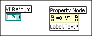

If you changed the class of the Property Node, the selected property might have become invalid.
Dotted properties and methods allow properties that return references to concatenate with other properties or methods. Dotted properties and methods are a shorthand version of cascading multiple Property Nodes that return references together where the reference returned from the property is wired to the reference input on another property or method.
To correct this error, right-click the Property Node, choose Select Property and select a valid property or dotted property.